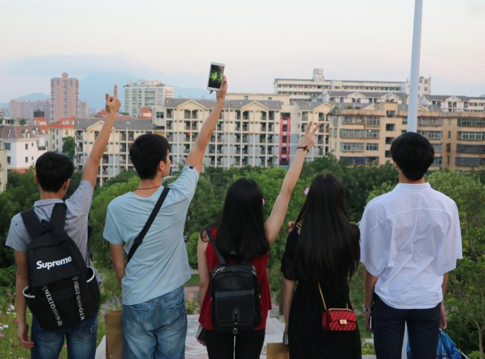
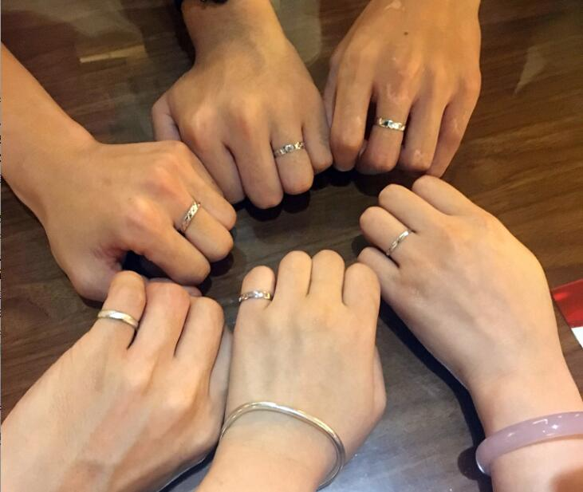

当他们在夏日之前唱歌的时候，我听到了自己的心声。
当舞展结束，与Florence拍照的时候，她问了我一句：“舞展结束了，开心吧”。我答道：“不开心”。她问：“为什么”。我答道：“因为这段日子到了”。
足迹深刻，记忆滞留。黑暗漫长，每一张可爱的笑脸，留在心间。
“你不舍得，是吗？”
我肯定不舍得，这一熟悉的氛围，任谁可以潇洒的来？纵然，讲的坦然，走的浩荡，可与其相遇路途... ...
我们的二婷回来了，一郑一周，一切尽在不言之中。我们拍摄了很多很多的青春，我们留下了很多很多的足迹，We Are 舞三多。We Are Family。

当然，还有一张，组长送我们的戒指：

这几天，文强、小林也回来了。这几天，侯磊去了福州。
就此。
若是有缘，必会相见。
再见。